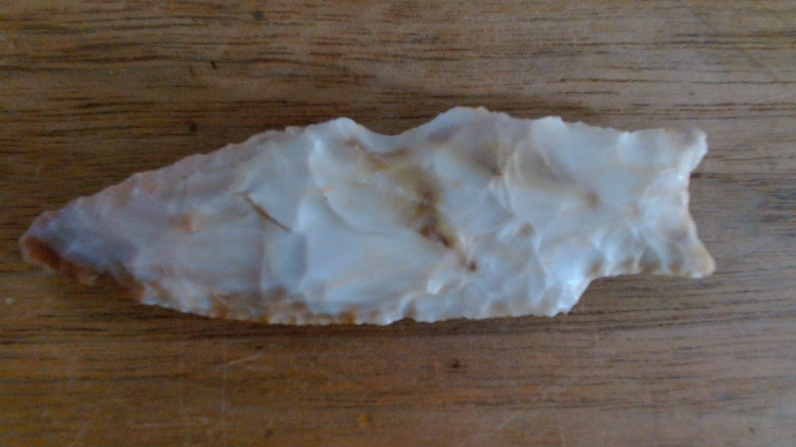

Rolling Oak · Elgin, Texas
Elgin Catalog
Documenting Central Texas surface finds, one stone at a time.
ELG-001 · stemmed dart point, front view
The collection
Add a find
Deep time
13,000 years in Central Texas
A simplified outline of the cultural periods archaeologists use for Central Texas. Dates are approximate and vary between sources. Where finds appear below, the placement is tentative: it follows each find’s top research suggestion, not a confirmed identification.
Undetermined
Finds without a period-diagnostic suggestion yet: fragments, flakes, cores and pieces still awaiting better photos or measurements.
People & land
Acknowledging the land and its people
The land around Elgin, in Central Texas, is the ancestral homeland of Indigenous peoples, including the Tonkawa, Coahuiltecan peoples, and others. People have lived on this land for more than 13,000 years, and their descendants are still here today.
The objects in this catalog were made by people whose descendants are living communities. These objects are part of their heritage, not just curiosities or collectibles. We document them to learn and to keep a careful record, and we know our understanding is limited. Where we use type names and period labels, those are archaeologists’ categories, not the names or histories the makers’ descendants would necessarily use.
Learn from the source
- Tonkawa Tribe of Oklahoma official tribal website
- Texas Historical Commission state historic preservation office
- Texas Beyond History public archaeology of Texas
Our ethics
- No selling. Nothing in this catalog is for sale, and we make no value claims.
- No burial items. We do not collect or catalog human remains or burial-associated objects. If they are encountered, we stop, leave them in place, and contact the Texas Historical Commission.
- Permission only. We collect only on private land with the landowner’s permission, never on public land.
- Report significant sites. We encourage reporting significant sites to state archaeologists (the Texas Historical Commission and TARL).
- Protect locations. Exact find locations stay private so sites aren’t disturbed.
If you are a member of a descendant community and would like something in this catalog changed or removed, we welcome that conversation.
About & methods
Elgin Catalog is a personal research record of surface finds from the Rolling Oak property near Elgin, Texas. Each entry documents material, measurements, photos and a short list of possible types, so the collection can be studied, corrected and, if the owner chooses, shared with researchers.
Honest-AI principles
- Possibilities, not identifications. Suggestions are ranked options with a stated confidence level.
- Show the evidence. Each entry lists the features used and what is still missing (scale, base view, weight).
- The owner corrects the record. Hands-on observations (e.g. “stem edges chipped, not ground”) override photo-based guesses and are logged.
- Estimates are labeled. Every measurement says whether it was measured or estimated from a photo.
Disclaimers
This catalog makes no claims about authenticity or monetary value. Type names and date ranges are general references from published Central Texas typologies and should be confirmed by qualified archaeologists.
Texas legal note
- Collect only on private land with the landowner’s permission, and record that permission.
- Collecting on public land (state or federal) is restricted or illegal.
- If you find human remains or burial-associated items, stop, leave them in place, and contact the Texas Historical Commission.
- Consider voluntarily reporting significant sites to the Texas Archeological Research Laboratory (TARL).
GPS privacy summary
- Exact location is private by default and never included in the published
data/catalog.json. - Sharing levels: Private (owner only), County (county and state only), Fuzzed (~10 km area, fixed offset per site).
- Photo EXIF/GPS is stripped by re-encoding each image in the browser before storage.
- Exports leave location out unless you tick “Include private location”.
- Your additions are stored only in your browser (IndexedDB); nothing is uploaded.